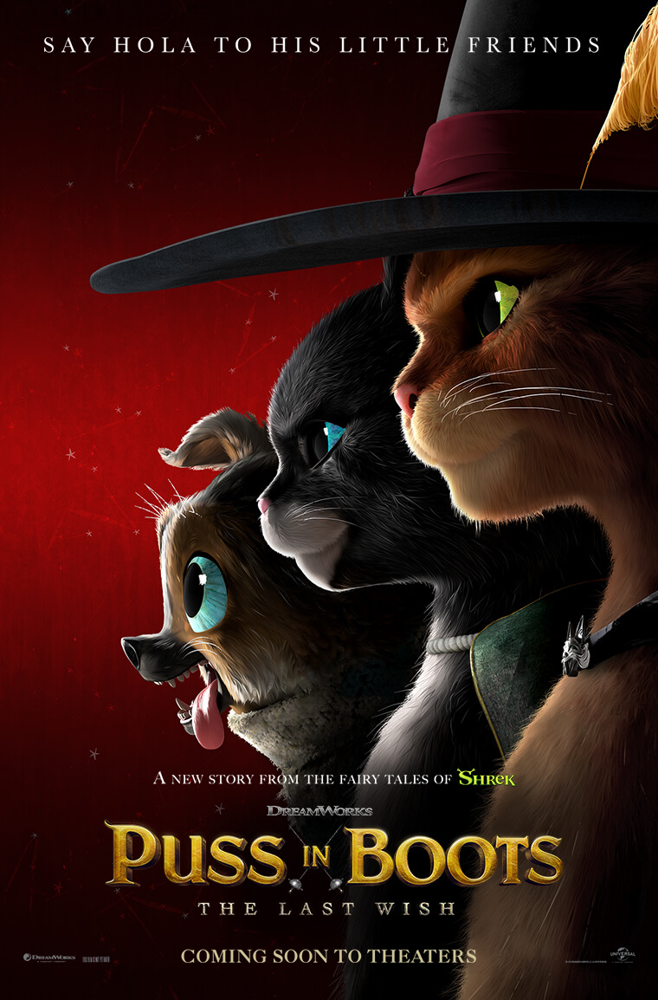
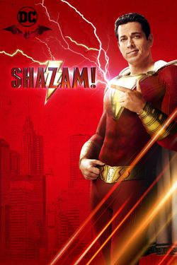

Puss in Boots discovers that his passion for adventure has taken its toll: he has burnt through eight of his nine lives. Puss sets out on an epic journey to find the mythical Last Wish and restore his nine lives.
Release date: December 21, 2022 (USA)
Director: Joel Crawford
Adapted from: Puss in Boots
Distributed by: Universal Pictures
Shazam! The Fury Of The Gods

Shazam! Fury of the Gods is an upcoming American superhero film based on the DC Comics character Shazam. Produced by New Line Cinema, DC Films, The Safran Company, and Mad Ghost Productions, and set for distribution by Warner Bros.
Release date: December 16, 2022 (USA)
Director: David F. Sandberg
Distributed by: Warner Bros. Pictures
The Adam's Project
After accidentally crash-landing in 2022, time-traveling fighter pilot Adam Reed teams up with his 12-year-old self for a mission to save the future.
Release date: March 9, 2022 (USA)
Director: Shawn Levy
Music by: Rob Simonsen
Budget: $116 million
Written by: Jonathan Tropper; T.S. Nowlin; Jennifer Flackett; Mark Levin
Distributed by: Netflix